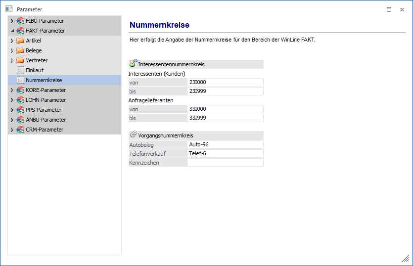
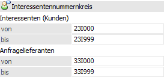
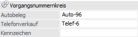

Über den Bereich "FAKT-Parameter - Nummernkreise" können spezielle Nummernkreise für die WinLine FAKT hinterlegt werden.
Hinweis
Standardmäßig wird das Fenster in einem "Lesemodus" geöffnet, d.h. es können die bestehenden Einstellungen kontrolliert, Änderungen allerdings nicht durchgeführt werden. Hierfür muss zunächst mit Hilfe des Buttons "Bearbeiten" der "Bearbeitungsmodus" aktiviert werden. Alternativ kann diese Aktivierung auch über das Kontextmenü der rechten Maustaste (Funktion "Applikation xxx bearbeiten") erfolgen.

Interessentennummernkreis

Für die Interessentenverwaltung in der WinLine FAKT können hier die Bereiche festgelegt werden, in welchen die Interessenten angelegt werden können. Bei der Anlage von Interessenten wird abgeprüft, ob die Interessentennummer innerhalb des Bereiches liegt. Ist dies nicht der Fall, wird eine entsprechende Warnung ausgegeben.
Ø Interessenten (Kunden) von / bis
Eingabe des Nummernbereiches für Kunden-Interessenten.
Ø Anfragelieferanten von / bis
Eingabe des Nummernbereiches für Anfragen bei Lieferanten.
Vorgangsnummernkreis

Ø Autobeleg / Telefonverkauf
In diesen Feldern muss für die Durchführung des Autobeleges und des Telefonverkaufes zwingend eine Vorgangsnummer hinterlegt werden. Wenn ein Eintrag vorhanden ist, wird beim Starten des Autobeleg- bzw. Telefonlistenfensters als Vorgangsnummer die nächsthöhere Nummer vorgeschlagen. Beim Starten des Duplikationslaufes wird diese Vorgangsnummer dann zurückgeschrieben.
Hinweis
Es kann immer nur ein Autobeleg- oder Telefonlistenfenster gleichzeitig geöffnet sein.
Ø Kennzeichen
Wenn ein Eintrag vorhanden ist, werden in der Telefonliste nur die Vorgangsnummern angezeigt, die mit diesem Kennzeichen beginnen.